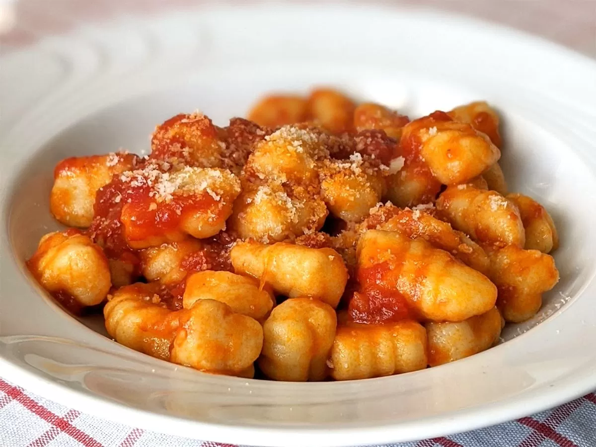

Receta ñoquis:

Ingredientes:
- 1 kilo de papa.
- 300 gr aprox de arina 0000.
- 1 huevo.
- sal.
- Nuez moscada.
Preparación:
Cocina las papas:
- Lava 1 kg de papas con cáscara y hiérvelas hasta que estén tiernas.
- Pélalas y haz un puré mientras están calientes.
Prepara la masa:
- Agrega al puré 1 huevo, sal, pimienta y una pizca de nuez moscada.
- Incorpora 300 g de harina de a poco, amasando suavemente hasta que la masa esté suave pero no pegajosa.
Forma los ñoquis:
- Divide la masa en porciones, haz cilindros largos y corta en trozos pequeños.
- Pásalos por un tenedor para darles la forma tradicional.
Cocina:
- Hierve agua con sal y cocina los ñoquis en tandas. Cuando floten, están listos.
Sirve:
- Escúrrelos y sírvelos con tu salsa favorita.